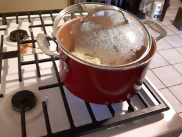
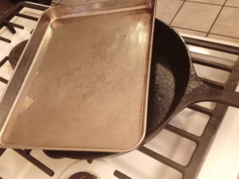
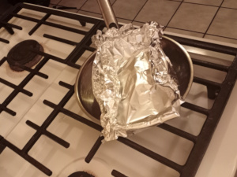

Pot/Pan
The Recipes - Novice (Nonstick)
Nonstick is my cookware of choice for carmelized onions because of the way it cooks them. Technically,
the term for this type of caramelization is called blonding.
If the bottom of the pot does get some brown that can not be easily removed with your spatula, pour a few tablespoons of water over it and
scrape again. This browning, which accounts for much of the flavor in carmelized onions, isn't usually
obvious when using a nonstick pan. If it is, either the heat is too high, or the pan may not be as
nonstick as we want. Either way, just deglaze, and turn down the heat a bit, and check every 5 minutes
or so until the fond doesn't build so fast. With cast iron or stainless steel, the browning has to be
carefully controlled throughout most of the recipe by deglazing and scraping. If it isn't, the fond
will burn and then the onions and oil will just taste burnt. This is why using nonstick with this
recipe is great for beginners. It also allows you to practice the cutting, cooking, and time management
processes with no real risk of having to throw away a time-consuming recipe. The flavor will be less
intense, but it's still amazing.
Although a nonstick pot is used in this recipe, a large nonstick skillet will work just fine. If the
onions don't fit in the skillet all at once, just add the oil and half of the onions. Set the heat
to medium-high, and set a lid on top of the skillet (it's okay if the lid sits on the onions). Cook
the onions down for about 10-25 minutes, stirring every 5 minutes and adding more onions until they
all fit. This may shorten the overall cooking time, which is fine, because you'll choose how long to
cook the onions near the end of the recipe.
The Recipes - Advanced (Cast Iron)
I really love cooking with cast iron, and caramelized onions are always the first thing that I cook in a
new cast iron pan.
If you've never cooked in cast iron before, but would like to learn the pan, I recommend a recipe
such as caramelized onions, or something deep fried. Both of these types of recipes are heavy on the oil, and will season
the pan while cooking, as well as protect the food from burning (more on this below).
As for this caramelized onion recipe, it's harder to see the brown fond when it builds on the black cast iron, but you'll
know its there b/c you'll also have bits of onions that are sticking too. Cast iron tends to release the food and fonds
easier than stainless steel, so you probably won't need the water every time you stir the onions, but keep a glass close
by so that you don't have to run back and forth to the sink.
The metal of cast iron (unless it was made back in the day, and therefore polished), is porous and not smooth, which is
apparent from its look and feel. When you heat oil in cast iron over very high heat, or lower heat over a longer period of
time, that oil breaks down into smaller chains of molecules that then begin to polymerize, or recombine into different, larger
molecular chains. The cool thing about this process is that when it takes place on top of cast iron, the newly created oil
polymer doesn't just bond with itself, it also bonds with the cast iron. This essentially means that with cast iron, some
oil, and some heat, you can make a DIY nonstick coating that is resistant to dish soap, rust, and food. This process is
known as seasoning the cast iron. While you can do this any time you feel like it by rubbing oil onto clean cast iron, and
sticking it in a 450 degree oven for an hour, you can also do this while cooking. Many techniques and dishes will season
the cast iron while cooking: frying chicken, searing meat, baking cornbread, and, fortunately for us, caramelizing onions.
Caramelizing onions is a great way to break in new cast iron.
The Recipes - Expert (Stainless Steel)
If you own or bought some stainless steel cookware only because you thought it would be easier to cook on, or take care of,
than cast iron, then I have some bad news. Not only does stainless steel need to be seasoned just like cast iron, it's also
a lot easier to burn the food that you are cooking on stainless steel. I'm not sure why the myth of no-season stainless-steel
persists, but I promise you that if your stainless steel seems less nonstick than the first time that you cooked with it,
then seasoning will fix it. Yes, stainless steel is easier than cast iron, but that's mainly because it's incredibly resistant
to rust.
That fond that I keep talking about? With a stainless steel pan, you'll be dealing with that pretty much constantly after most
of the onion liquid has evaporated. It's best to keep a glass of water for deglazing at hand while you cook.
Stainless steel is a poor conductor of heat, but so is cast iron. This is something you will probably read, so let me explain it.
Stainless steel and cast iron accept heat from the stovetop exceptionally well, but neither spread it evenly (neither pan can make every square
inch of itself the same temperature). Cast iron will heat food more evenly than stainless steel, but this is
only because cast iron retains heat so well. This just means that when the parts of a cast iron pan that isn't directly touching a flame or an electric
spiral coil finally absorb some heat from the parts that touch the flame/coil, they do not let that heat release easily. Cast iron just spreads it better
because it holds onto the heat.
Stainless steel, on the other hand, will just releases that heat right back into any place that will accept it. And since parts of the stainless steel pan will
be cooler because stainless steel doesn't retain heat well like cast iron, it will keep sending heat to a place where it is easily lost, generally to the
food or atmosphere or the metal stove. So, stainless steel is pretty terrible unless it has a copper core. (Copper is the best element we have
for heat absorbtion and transfer, but it's not really priced for home cooks or the majority of restaurants.) But if you've watched a few cooking
shows or been inside a restaurant's kitchen, you've probably noticed that chefs use stainless steel often. This is because
experienced cooks cook intuitively, and will naturally adjust the food and heat if there are signs of the food heating too
quickly or slowly, whereas a beginner usually needs to follow a recipe to gain that intuition. The best way to learn to cook
intuitively is to practice a recipe consistantly several times, and because caramelized onions are so versatile, it's a perfect
recipe to help you learn your pan.
Other stuff
There are other types of cookware that I don't cover here, such as stoneware, glass, or copper, and while these all have their merits, this section isn't about them.
I want to discuss the truly heinous pots and pans that most of us have used at least once but don't always throw out, you know, just in case. Such as stainless steel
so thin that you could confuse it with aluminum, or teflon so cracked and worn-away that the glittery metal peeks out, and pans that seem to scorch food no matter how
low the temperature is set, stuff like that. Years before I stepped into a commercial kitchen, I thought I was a bad cook, but now I understand it really wasn't me,
it was my terrible pans. If you've followed the recipe, added enough oil, and turned down the heat when the onions kept browning too fast,, then it wasn't you, and it
most likely wasn't me, it was that pan.
Lid
You have many options here if you don't have a perfect sized lid for your pot or pan. The easiest option is to not use one at all, however, this will alter the first block of cook
time for each recipe, and also make the overall cooking time longer. The lid helps cook the onions from the top down which expels the onion liquid faster. Leaving the lid askew
allow that liquid to evaporate. In these recipes, using the lid is crucial, so please select one from the following options.
Skillet lid
In restaurants, when a lid is necessary for a skillet, I just flip over another skillet of the same size and set it on top. Because this recipe calls for the lid to be askew, a
smaller skillet can be used as a lid. Just take care to use a pot holder when removing the skillet lid. It will get very hot. This option will most likely cause condensation to
pour over the stove top. If this is unacceptable to you, take a look at the other options.
Sheet tray lid
Another option is a sheet tray, better known as a cookie sheet or sheet pan. This option can be tricky: be careful of the condensation however, as it will bead across the sheet
tray when it's lifted, and then rain down. Also, watch your forearm. The steam has a tendency to move all the way across the flat metal and it always seems to aim for your arm.
You can lift the sheet tray with long tongs to avoid this, but you'll still need to be careful of the scalding hot condensation rain. Just stand back from the stove (to protect
yourself from the steam), and grab a corner of the sheet tray with tongs, or a pot holder. Next, slide the sheet tray straight onto the stove top. If you don't want the
condensation on your stove top, you can set another sheet tray down to catch the one being used as a lid.
Aluminum foil lid
Make a foil lid before doing anything else because the pan needs to be cold, and it's easy to forget to make it after you've begun prepping. Take your chosen pan, place a sheet
of aluminum foil over the top, and bring in the edges loosely against the pan. It doesn't need to be tight-fitting, it just needs to stay in place. Now, roll up two opposite sides
of the foil inward about 2 inches. Remove the foil lid and set aside until you need it. Please stand back while using tongs or a pot holder to remove this lid during cooking. The
aluminum may not feel very hot, but there will still be steam and condensation coming for your wrist and arm.

Proper lid placed askew
Skillet used as lid

Sheet tray used as lid

Aluminum foil used as lid
Knife
I can not stress this enough: if you are unsure how to hold your thumb and fingers when you use
a knife, google it, watch a youtube video, or take a cooking class. Do whatever you have to do
to learn to use a knife properly. If you do not position your fingers exactly correct, you will
eventually be cut. Prepping enough onions for these recipes requires a lot of knife work, which
means those cuts will probably come sooner rather than later. And it isn't just about the finger
or thumb cuts. Slicing off a a big hunk of fingernail is one of the most painful kitchen accidents
I've ever experienced. And that wound can't be stitched back together.
Knives to not use
There are several knives designed for other purposes than slicing and chopping, which is what we
need the knife to do for these recipes. A filet knife, boning knife, or a knife with a serrated
blade will make slicing 3 lbs of onions difficult, and we really want this to simple and fast, so
while it is possible to use these, they are bad choices. A paring knife is a bit better, but the
blade usually isn't long or tall enough for it to be convenient. Hunting knives will definitley
get the job done, but the handle usually doesn't leave enough room between your knuckles and the
cutting board.
Knives that are best
So, what should you use? An 8 inch chef knife is generally the gold standard in the kitchen. It's an amazingly versatile tool,
and for prepping onions it is a top choice. However, for these recipes, I used a Santoku with a 4.5
inch blade. Santoku knives have thinner blades than chef knives, which is nice for thin slicing. The
blade is flat, so it eliminates almost all of the rocking motion that is usually required by a chef
knife, which is just my personal preference. If you're looking to purchase, go with the chef knife if
you don't currently own one because you'll end up using it for almost everything in the kitchen. If you
decide to purchase a Santoku, I'd recommend one between 5 and 8 inches.
Cutting Board
You'll need to cut on something other than the kitchen counter, because the knife needs to stay sharp. Dull
knives lead to many more kitchen accidents than sharp knifes because dull knives slip around on the food and
onto fingers. There are several options, each with pros and cons, but I just use the same type at home as I
do in restaurants: A big, square slab of poly, better known as polyethylene plastic. Place a kitchen towel,
or a damp paper towel, underneath if the board tries to slide around.